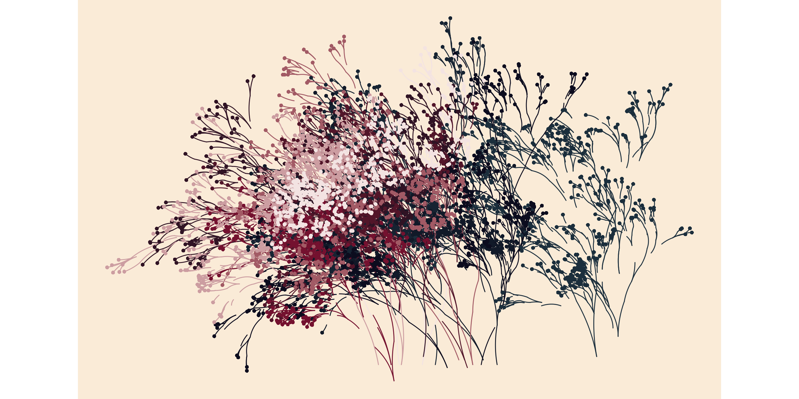

Flametree provides a system for making generative art in R, written with two goals in mind. First, and perhaps foremost, art is inherently enjoyable and generative artists working in R need packages no less than any other R users. Second, the system is designed to be useful in the classroom: getting students to make artwork in class is an enjoyable exercise and flametree can be used as a method to introduce some key R concepts in a fun way. You can install the current version of flametree with:
install.packages("flametree")Alternatively you can install the development version of flametree with:
# install.packages("devtools")
devtools::install_github("djnavarro/flametree")Flametree is fairly flexible and produces art in several different styles. One example is shown here, other possibilities are described throughout the documentation.
library(flametree)
# pick some colours
shades <- c("#1b2e3c", "#0c0c1e", "#74112f", "#f3e3e2")
# data structure defining the trees
dat <- flametree_grow(time = 10, trees = 10)
# draw the plot
dat |>
flametree_plot(
background = "antiquewhite",
palette = shades,
style = "nativeflora"
)